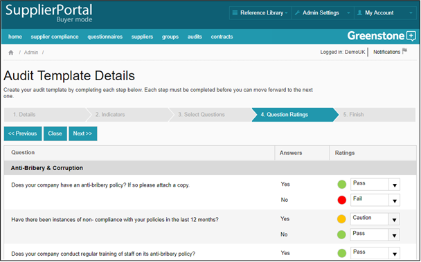

The Audits function of Supply-Chain Sustainability (SCS) can be used to audit / verify the information submitted in supplier questionnaire responses. In order to use the automated audit function you will require the correct user role and will then need to set up your audit template(s).
Click ‘Add Audit Template’ and follow the steps. Create your own indicators against which you will evaluate Supplier responses, select the questions that you would like to make up this particular template, assign an indicator to each response option available – where there are free text responses this can only be done when the audit is being carried out – and then save the audit along with any notes for the auditor e.g. pass fail parameter. On the final step you will need to check the ‘Live’ box in order to be able to use the template.
